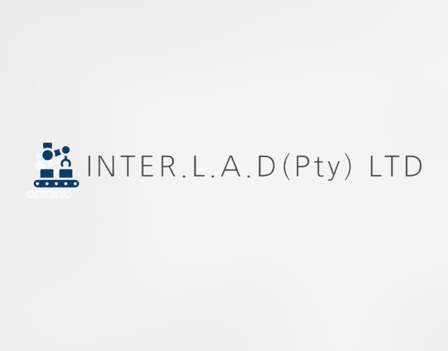

Our Services
INTERLAD provides execution-focused support across logistics, procurement, consulting, project coordination and strategic business initiatives, helping clients move opportunities from concept to delivery across African markets.

How We Work
INTERLAD operates in fast-changing business environments where clients often need more than a narrowly defined service provider. We support organisations across sectors by combining coordination, commercial judgement and practical execution to help move opportunities forward.
Our work spans logistics, procurement, supply chain support, consulting, renewable energy, water treatment, mining-linked support, fintech-related initiatives and strategic business development. This breadth reflects the realities of the markets in which we operate, where challenges often cut across functions, sectors and geographies rather than sitting neatly within one specialist category.
Cross-Industry Capability
INTERLAD is structured to work across industries because many of the most valuable opportunities sit at the intersection of sectors. We bring a consistent approach centred on execution, coordination and opportunity management, while adapting our support to the operational and commercial realities of each project.
This cross-industry exposure allows us to identify synergies, understand wider business implications and support clients with solutions that are practical, commercially grounded and responsive to context.
Logistics, Distribution and Supply Chain Support
We support clients with cross-border logistics coordination, cargo planning, routing support, distribution requirements and supply chain problem-solving across African markets. Our role is to help move goods efficiently, align stakeholders and maintain operational momentum where coordination and responsiveness are critical.
This includes air, sea and road freight coordination, sourcing support, supplier alignment and broader execution support linked to trade and distribution mandates.
Procurement and Commercial Support
INTERLAD assists businesses, institutions and project stakeholders with procurement support, supplier coordination, sourcing strategy and delivery planning. Our role goes beyond obtaining goods. We help clients manage complexity, reduce friction and move efficiently from identified need to practical outcome.
This includes public-sector supply support, industrial procurement, campaign-related equipment supply, project-linked sourcing and other specialised mandates that require disciplined execution and adaptability.
Consulting, Feasibility and Strategic Advisory
We provide consulting and strategic support for ventures that require market understanding, commercial assessment and practical structuring. Our work includes financial and technical feasibility support, business development, market research, opportunity evaluation and project-related coordination across multiple sectors and markets.
We help clients assess opportunities more clearly, make informed decisions and move viable ideas toward implementation with stronger commercial grounding.
Renewable Energy, Water Treatment and Infrastructure-Linked Support
Our services extend into renewable energy, water treatment and infrastructure-linked initiatives where clients require commercially versatile support rather than narrow technical silos alone. INTERLAD contributes through coordination, sourcing, project support, feasibility-related work and broader strategic involvement in opportunities tied to energy access, infrastructure development and industrial growth.
This reflects our broader belief that resilient businesses are those that can evolve with markets, support multiple forms of value creation and remain relevant across changing economic realities.
Why Clients Work With INTERLAD
Clients often benefit from working with a partner that can combine broad capability with focused problem-solving. INTERLAD brings a commercially minded, adaptable approach that is especially valuable where projects cross multiple functions, sectors or markets.
We do not define ourselves by one narrow category. We define ourselves by our ability to understand opportunities, adapt to context, coordinate effectively and deliver practical solutions that create value.
Work With INTERLAD
Whether you require support with freight coordination, procurement, consulting, project development, strategic ventures or cross-border commercial activity, INTERLAD is available to explore how we can assist. We combine agility, regional understanding and execution-focused support to help clients move with confidence across sectors and markets.